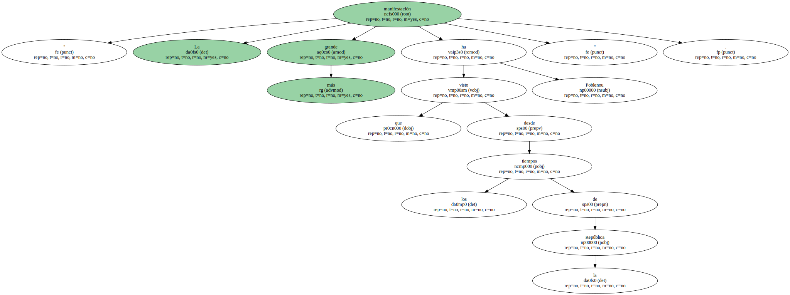
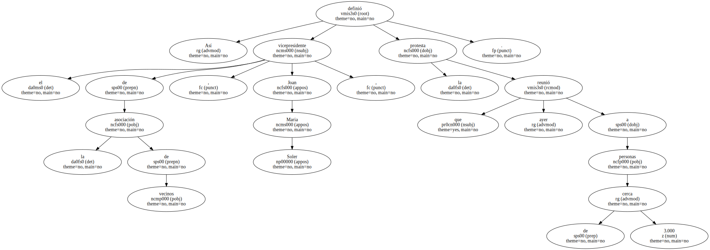
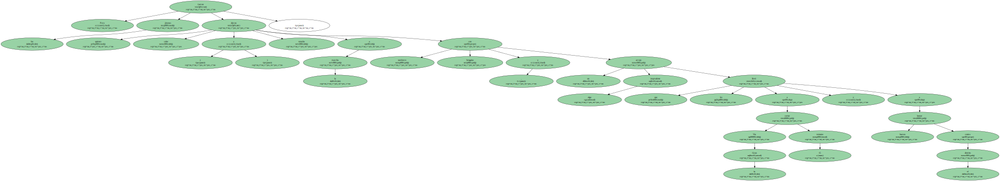

" La manifestación más grande que ha visto Poblenou desde los tiempos de la República ".
Así definió el vicepresidente de la asociación de vecinos , Joan Maria Soler , la protesta que ayer reunió a cerca de 3.000 personas.
Hubo desde abuelas a padres con cochecito.

Pero fueron los jóvenes quienes dieron color ( y tensión ) a la marcha con tambores , bengalas y un arrojo algo imprudente que les llevó a cortar la Gran Vía 15 minutos y a lanzar huevos contra el distrito.
